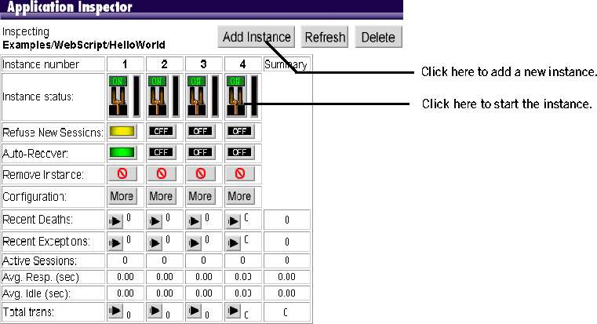
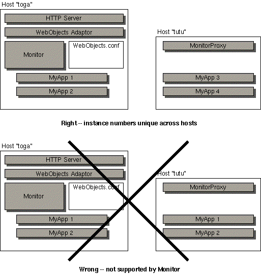

Table
of Contents
Table
of Contents  Previous
Section
Previous
Section
You can improve the performance of a WebObjects application by distributing the processing load among multiple instances of the application. These application processes can be running on the same machine as the server or on remote machines. The task that accomplishes this distribution is called load balancing.
As an example of how load balancing works, suppose you have an application called MyApp and you have configured WebObjects to run two instances of MyApp on the host toga and two instances on the host tutu. When a user types this URL:
http://toga.acme.com/cgi-bin/WebObjects/MyApp
the WebObjects adaptor looks for an instance of MyApp on the host toga. If it finds an instance and the instance is ready to receive requests, the adaptor sends the request to that instance. If both of the instances of MyApp on toga are busy, it accesses an instance on the host tutu.
Use the Monitor application to create new instances of an application for load balancing. To create new instances of an application, do the following:
The Application Inspector opens in the right frame.

When you create multiple application instances in this manner, you are creating the public configuration file NeXT_ROOT/NextLibrary/WOAdaptors/Configuration/WebObjects.conf. When the adaptor receives an HTTP request for an application, it first (in its initial mode) checks WebObjects.conf for an application instance that is accepting connections and forwards the request to it. The section "WebObjects HTTP Adaptors" describes in some detail both the public configuration file and the adaptor modes involved in load balancing.
Note that Monitor always assigns a unique number to each application instance, even if it is running on a different host. It does this so that it can recover a crashed instance for you. If an instance dies, Monitor can try to recover it by launching it on another host. Because of this, instance numbers must be unique across hosts.
The WebObjects.conf file, however, only requires an instance number to be unique on a given host. Consider the example given previously, where two instances of MyApp run on host toga and two instances run on host tutu. If you were to set up a WebObjects.conf file by hand, you could assign instance numbers 1 and 2 to the two instances on toga and instance numbers 1 and 2 to the instances on tutu. This is legal, but it's not supported by the Monitor, and if you do this, you won't be able to use Monitor for the instances you've created.

To determine how many instances of an application you should run, do the following:
Your application's state-storage strategy affects load balancing. By default, applications store state in memory in the server. If the application uses this default state-storage strategy, the instance that processed a session's first request must be used to process all subsequent requests. That is, the load-balancing granularity is per session. If you store state using some other strategy (for example, if you store state in the file system), true load-balancing can be achieved; each request from a session can be processed by any application instance (that is, the load-balancing granularity is per request).